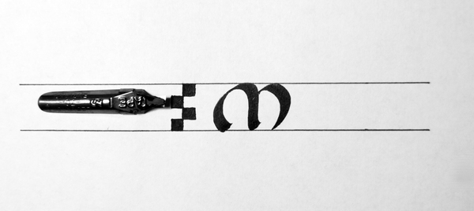
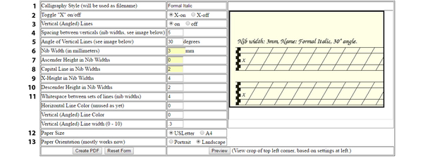
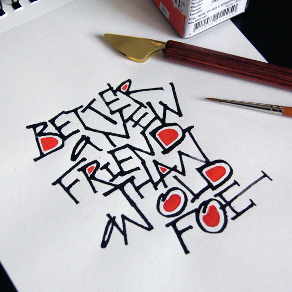
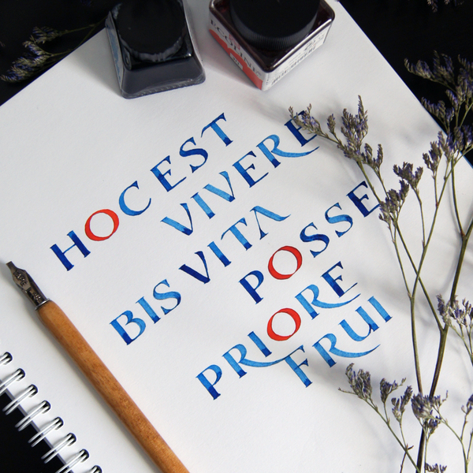
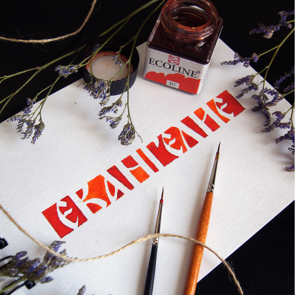
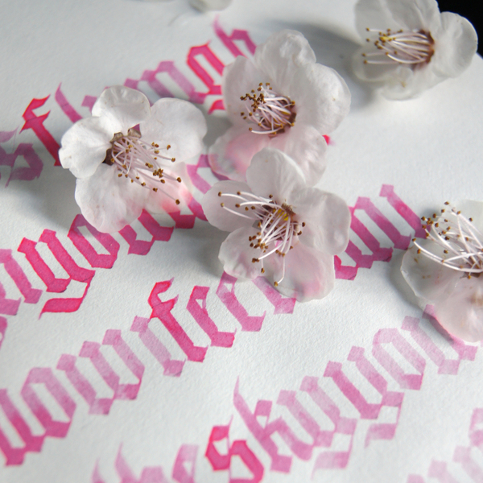
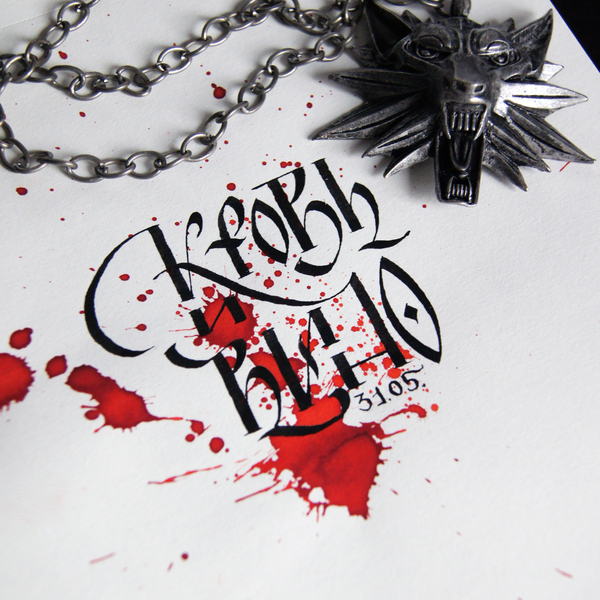
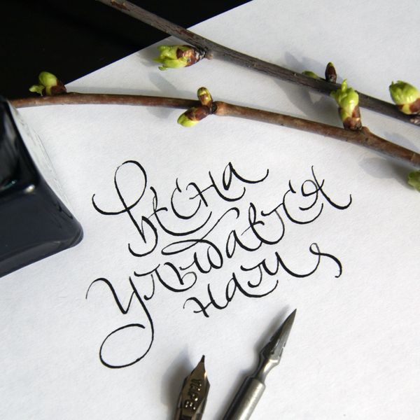

Доброго дня! Долго думала о чем писать следующий пост, посвященный практике в каллиграфии. Спасибо моим подписчикам за терпение!
Самый популярный вопрос, который мне задавали был о сетках. Как же к ним подступиться и какие параметры выставлять. В принципе разобраться не сложно, давайте начнем немного с терминологии.
По буквам
1. Верхний выносной элемент
2. Нижний выносной элемент
3. Внутрибуквенный просвет
4. Межбуквенное расстояние
5. Росчерк
По границам
1. Граница прописных (заглавных) букв (в примере в качестве заглавной буквы я привожу ломбардский версал)
2. Граница верхних выносных элементов
3. Высота строчных (в простонародье - маленькие буквы) букв
4. Базовая линия
5. Граница нижних выносных элементов
Как определить высоту строчных букв
У каждого каллиграфического шрифта есть свои пропорции. К примеру - возьмем унциал. В унциале высота строчной буквы равна 4 ширины пера. Значит, если мы планируем сделать надпись пером 3мм - высота строчной буквы будет 3*4 = 12 мм.

Перейдем непосредственно к разбору генератора сеток. Напомню ссылку на генератор для ширококонечных стилей Слева мы будем выставлять параметры, справа можем посмотреть превью(нажав на соответствующую кнопку внизу)
1. Calligraphy Style (will be used as filename) - название каллиграфического стиля, оно будет отображаться в заголовке нашего документа.
2. Toggle "X" on/off - отображение указателя базовой линии
3. Vertical (Angled) Lines - включение-выключение отображения вертикальных линий, его лучше оставить, даже если в выбранном вами стиле отсутствует наклон букв, то эти линии помогут сохранить наклон самого пера.
4. Spacing between verticals (nib widths, see image below) - расстояние между вертикальными линиями - на ваше усмотрение, для новичков рекомендую ставить почаще.
5. Angle of Vertical Lines (see image below) - угол наклона вертикальных линий. Как я говорила если Вы пишете италик - то эти линии будут помогать сохранить наклон буквы, но если вы практикуете "прямой" шрифт, то выставляем наклон пера по отношению к базовой линии (к примеру - для унциала 30 градусов)
6. Nib Width (in millimeters) - ширина вашего пера
7. Ascender Height in Nib Widths - высота верхнего выносного элемента
8. Capital Line in Nib Widths - высота прописных букв
9. X-Height in Nib Widths - Х - величина ширины пера, в данном пункте выставляется высота строчных букв в зависимости от стиля (к примеру, для унциала - 4 ширины пера)
10. Descender Height in Nib Widths - высота нижнего выносного элемента
11. Whitespace between sets of lines (nib widths) - расстояние между строками
Следующие три параметра я пропустила, так как в них выставляются цвета линий, это не так важно.
12. Paper Size - размер бумаги
13. Paper Orientation (mostly works now) - ориентация листа

Если возникают вопросы по пропорциям шрифта - то их всегда указывают в образцах в виде лесенки из квадратиков)
Получился такой вот небольшой пост, чтоб не было совсем скучно от цифр и параметров предлагаю немножко отвлечься. Последние весенние этюдики. =)
Самый-самый любимый инструмент!

Весна пришла и тянет на позитивные цвета!

Особенно на жидкую акварель. Самый любимый цвет.

Вдохновение везде!

Для фанатов - совсем уже скоро!

И мы ей улыбнемся! Чудного тебе дня, мой любимый читатель!
